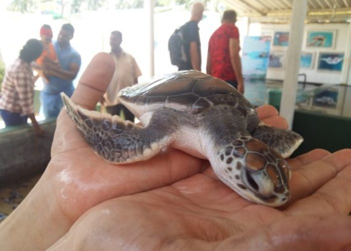

Hikkaduwa Turtle Hatchery

The Hikkaduwa Turtle Hatchery, located on the southern coast of Sri Lanka, is a conservation project that aims to protect and preserve sea turtles. The hatchery is a sanctuary for injured, sick, or disabled turtles, and it provides a safe space for them to heal and recover.
The hatchery also conducts beach patrols to monitor turtle nesting sites and protect them from predators, poachers, and other threats. In addition, the hatchery educates visitors about the importance of sea turtle conservation and encourages them to support the cause.
Photo Gallery
